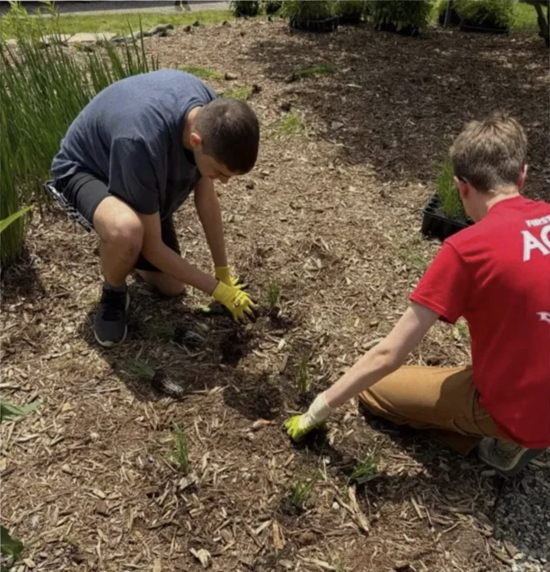
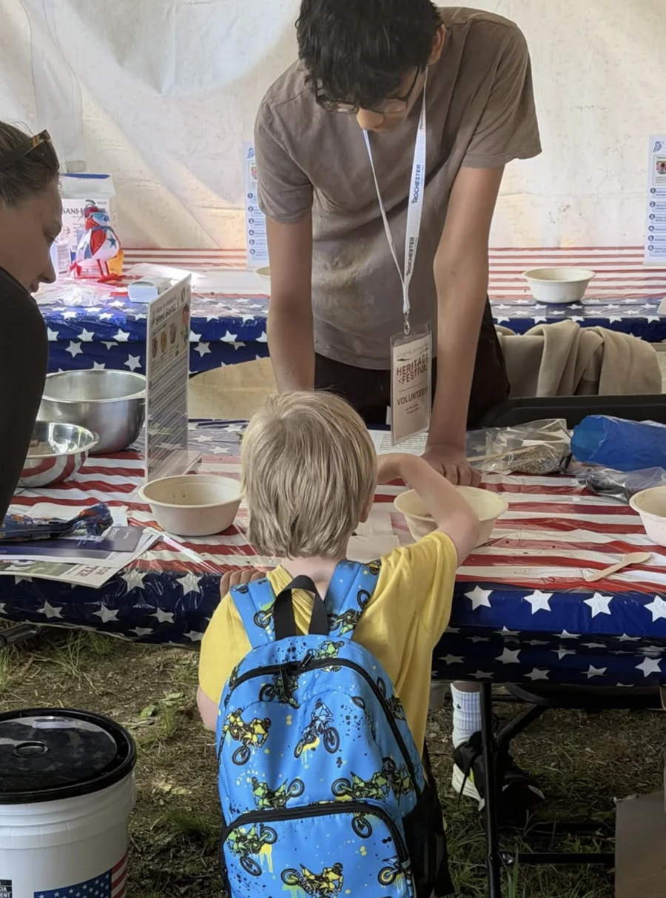
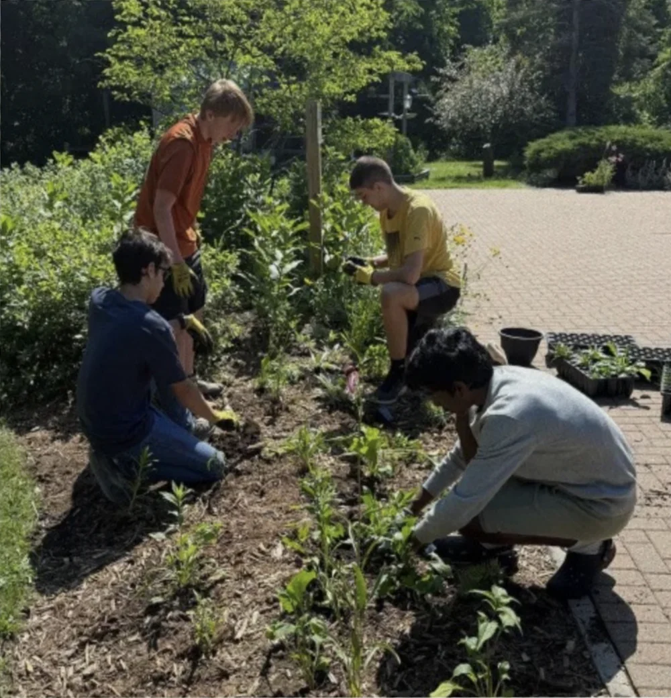
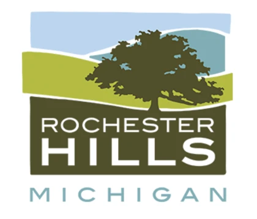
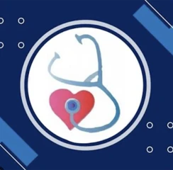
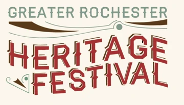
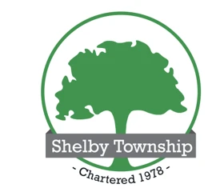
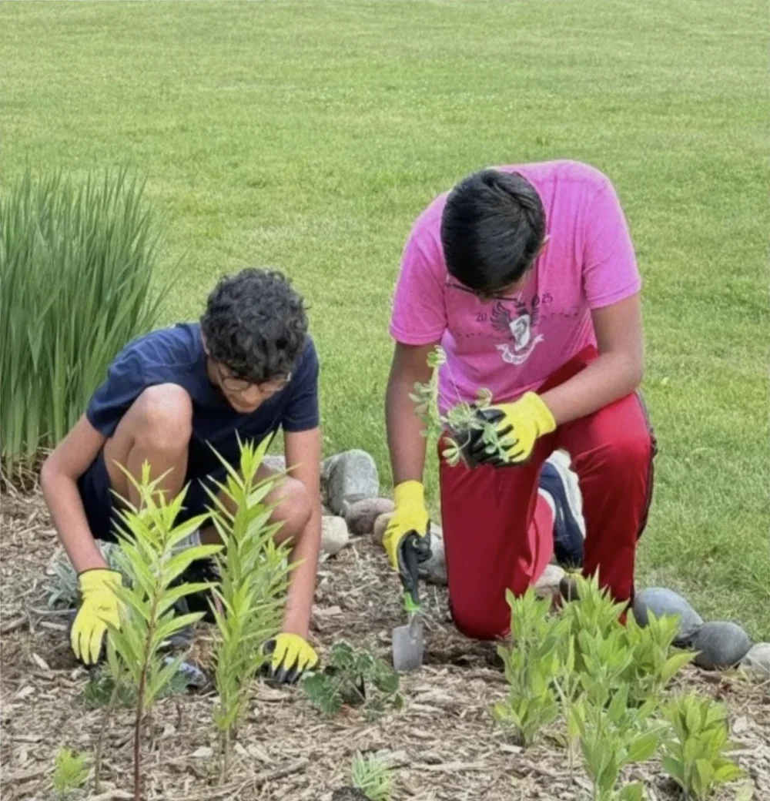

Education
Robotics teaching using micro:bits for schools in Oakland County. We’ve raised $2,000 for this project.
Our mission
Robotics teaching using micro:bits for schools in Oakland County. We’ve raised $2,000 for this project.
Email OSI for training information about health and hospice volunteering and opportunities to support and care for patients.

Planting and protecting local green spaces, including 500 plants added at Burgess-Shadbush Nature Center in two days.
What we do
Robotics teaching using micro:bits for schools across Oakland County.
We’ve raised $2,000 for this project. Email us if your school would like to participate.

Helping host events across Oakland County, including the Rochester Heritage Festival.
Bringing neighbors together through hands-on activities and community service.

Planting and caring for local green spaces, with $3,000+ worth of plants planted across our environmental work.
At Burgess-Shadbush Nature Center, volunteers planted 500 plants in two days.
Interested in caring for patients through health and hospice volunteering?
Email OSI to receive training information and learn how to get involved in volunteering in the medical field.
Our partners
The organizations and communities that are part of our work.

Food-related volunteer serviceExplore the organization
Community event participationVisit Rochester HillsThank you to the supporters who help make our service possible.

Health and Hospice
Greater Rochester Heritage Festival
Shelby Township
Join OSI
Teach, volunteer, care for patients, or help our green spaces grow. There’s a place for your time and ideas in Oakland County.